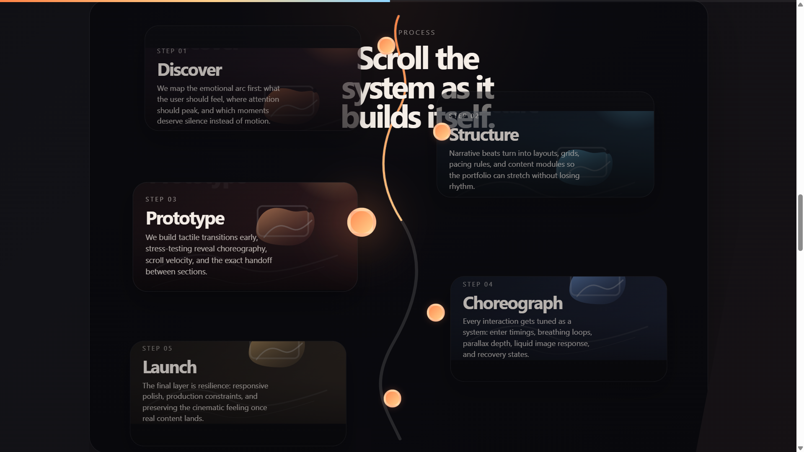
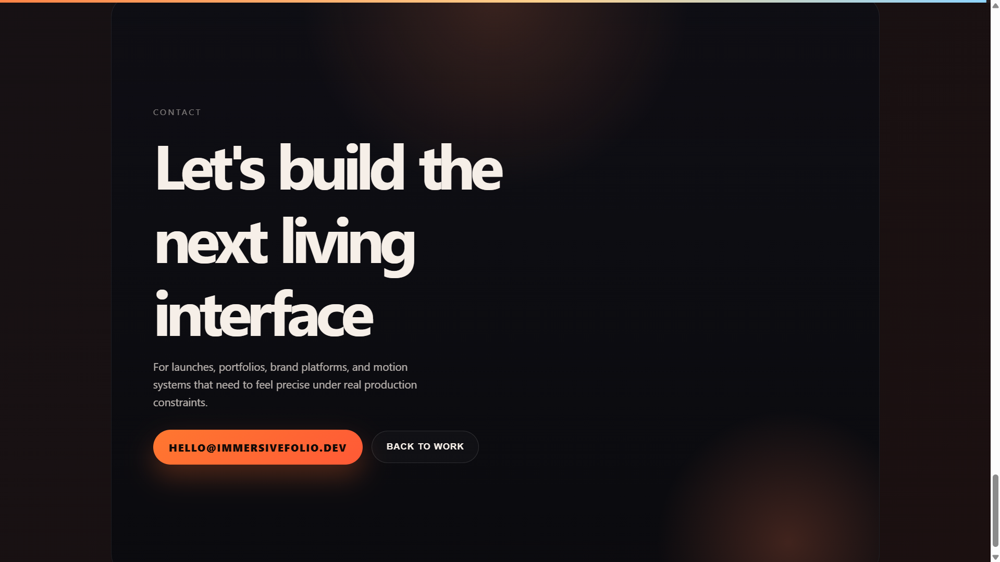

The Iteration Premium
Three coding agents were asked to build the same multi-day animated portfolio. The story isn't who finished — it's how MCP servers compress the cost of every loop after the first draft.
A coding agent's first answer is the part everyone benchmarks. The part that decides whether the work ships is everything that happens after — the layout that's almost right, the scroll handler that jitters on the third reload, the SVG path that drifts a few pixels off its label. This study tracks three agents through that second half on the same multi-day build, and the story it tells is small and useful: where MCP servers were available and used, each loop got cheaper; where they weren't, the loop just kept costing what it cost.
The brief was the same in every session: build a <ImmersivePortfolio /> React component using Motion.dev, layered in over multiple turns — hero, displaced background, project grid, scroll-driven process timeline, draggable clients carousel, and a final integration pass. Across codex, claude-code, and gemini-cli, the same prompts produced 38 turns, 35 of which were follow-ups: bug reports, alignment fixes, scroll fidelity complaints, screenshot-driven debugging. That is the shape this work has in real product engineering, and it's the shape MCP servers either help with or don't.
End-of-session builds
Each link opens that agent's deployed build at the point where its iterative session ended. These aren't finished products. They show what the agents were capable of converging on inside the prompt set used here — every further refinement, polish pass, or feature addition is bounded by the creativity of the prompts a user is willing to write. The static prompts story is at agents-comparison.html; the build prompts themselves are recorded in PROMPT.md, and the verbatim iterative prompt archive is in iterative-prompts.md.
| Agent | Active work | Prompt turns | Final build |
|---|---|---|---|
| codex019e5d97 · GPT-5.4 (medium) | 1h 1m 30s + 8h 27m idle |
14 | Open build → |
| claude-code0fbef8f3 · Sonnet 4.6 (high) | 2h 41m 42s + 1h 48m idle |
12 | Open build → |
| gemini-cli410aac00 · Gemini 3.1 Pro Preview | 2h 5m 59s + 2h 35m idle |
12 | Open build → |
The work was never one-shot
Of 38 prompt turns across the three sessions, only 3 were initial build requests — one per agent. The remaining 35 turns were either feature extensions ("now add the carousel"), corrective bug reports ("the timeline is misaligned with the cards"), or screenshot-attached debugging ("the text is overlapping"). Two turns explicitly asked the agent to verify a fix using Playwright MCP. One referenced a PNG attachment of a broken layout.
That ratio is the most important fact in the dataset. The productivity question for a coding agent isn't "can it generate a working hero on the first try" — all three did. The productivity question is what happens on turns 6 through 12, when the user has seen the running interface, found something wrong, and needs the agent to absorb that feedback without a human walking it through the diff.
Active work vs wall clock
The raw session spans run anywhere from four and a half to nine and a half hours, but that is not how long the agents were actually working. Most of the difference is human idle time — the user walked away after a feature landed, came back forty minutes later, looked at it on their phone, sent the next prompt. After subtracting those waits, the combined active work time across all three sessions is 5h 49m, against 12h 48m of removed idle.
That reframes how to read everything else. Codex's 9h 29m raw span was 1h 1m of active work and 8h 27m of waiting for the next user prompt. Gemini CLI's 4h 40m ran about evenly — 2h 6m active, 2h 35m idle. Claude Code had the most active work time at 2h 41m and the least idle removed. The productivity question is what each agent gets done during the active part.
That density is striking: Codex executed 350 tool calls in roughly 61 active minutes — about 5.7 calls per minute, the densest tool-use rate in the field. Gemini CLI ran at a similar density (~4.9 calls/min), but the calls were skewed toward shell rebuilds and file edits. Claude Code's profile is the opposite: more active minutes, more reading before patching, ~1.2 calls per minute.
The idle column has a second meaning worth keeping. Those gaps aren't wasted time for the human — they're time recovered. The async shape of an MCP-equipped coding agent means the user can hand off a feature, step into a meeting, ship something else, then come back and send the next prompt. Even the active span isn't fully claimed: while the agent is patching code, running builds, and verifying in the browser, the human is free to context-switch. The 5h 49m of active work tracked here was the agent's clock, not the user's. The compounding productivity story is that an MCP-equipped agent extends the user's working day without requiring more hours from the user.
Where MCP shows up in the loop
Across the three sessions, tool activity falls into six recognizable categories. The breakdown matters more than the total, because it tells you what kind of work each loop was doing.
The codex session is roughly balanced: a third of its calls go to browser verification, a third to shell, and the rest split between file edits, Motion.dev lookups, and planning. The claude-code session is read-heavy — the largest single category is Read, which means the agent spent a lot of its tool budget gathering context before patching. The gemini-cli session is the heaviest in raw volume and the most generic: a lot of shell, a lot of file edits, almost a hundred planning/topic-update calls, and not a single Motion.dev MCP call.
That last fact is worth pausing on. Every agent received the same instruction to use the Motion.dev MCP. The three sessions converted that instruction into 17, 6, and 0 Motion.dev tool calls respectively. The data isn't telling a story about which is "right" — it's telling a story about how unevenly MCP availability becomes MCP utilization, and what happens to the rest of the workflow when it doesn't.
The split is the cleanest single result in this study. Domain MCP — the Motion.dev-specific surface for component lookup, animation patterns, API docs, served by motion-dev-mcp — was used heavily by one agent, lightly by another, and not at all by the third. Browser MCP — Playwright navigation, screenshots, console reads, evaluated DOM queries, served by playwright-mcp — was used by all three, and used more as the sessions wore on. By turn 8 in every session, verification had become the dominant tool category.
That suggests the two MCP layers do different jobs. Domain MCP is upstream: it shapes what code gets written. Browser MCP is downstream: it shapes how quickly the agent learns whether the code worked. The first is easier to opt out of; the second isn't, because without it the only feedback loop is the user looking at a screen and typing.
The verification surface is the real productivity layer
If domain MCP belongs to the build phase, browser MCP belongs to the long tail. The cumulative Playwright/browser calls across the three sessions tell the story:
The shape is the same in all three agents, even though their totals differ. There is a roughly flat early section while features are being added, and a steep climb starting around the first bug-report turn. The verification surface is what lets the agent close the loop on a visual problem without the user having to inspect, diff, and explain. It is, in a real sense, the part of the toolchain that lets an agent iterate.


./codex/iterative/. Process section (left): the alignment / scroll-animation surface that drew repeated bug reports. Contact section (right): the sticky-scroll bug that dominated the late corrective tail.The corrective phase is where MCP earns its keep
Reading the prompt logs in order makes the pattern obvious. The first five turns in every session are feature requests: build a hero, add a displaced image, add a project grid, add the scroll-driven process timeline, add the carousel. From turn six onward, the prompts shift in character entirely. They become things like "Fix process section, since the text isn't aligning with the cards. Use playwright mcp to verify the fix", or "The scroll jitter is still there", or screenshots attached with two-line captions.
That is the part of the work where the cost of each loop matters most. A feature can be specified in a paragraph; a bug usually can't. The user describes a symptom, and the agent has to find the cause. Without browser MCP, that means asking the user to confirm what's on screen. With browser MCP, the agent can navigate to the running build, read the DOM, take a screenshot, execute a probe, and converge on the fix in the same turn.
The error rate column in the dataset is the closest thing to a direct cost signal. It's heuristic — three different log formats — but the direction is consistent: codex ran at a normalized 4.29% tool-error rate, claude-code at 8.08%, and gemini-cli at 12.32%. The agent with the broadest specialized tool surface also had the cleanest error profile per call.
An MCP is only as good as its fit
One detail in the Claude Code session is worth keeping. Two of its Motion.dev MCP calls failed early: generate_motion_component returned "Unknown animation pattern: stagger", and get_component_api returned "No API documentation found for component: motion.span". That's not a problem with MCP in general — it's a problem with the specific Motion.dev MCP's coverage on the specific patterns the agent reached for. After those failures, Claude Code's domain-MCP usage thinned out and the session leaned more on file reads and shell builds.
That's the kind of detail that should land in any productivity story about MCP servers. Availability isn't enough; alignment matters too. A domain MCP that doesn't recognize the patterns or components an agent needs becomes a brief detour, not a productivity lever. The good news is the recovery pattern was fast — Claude Code didn't get stuck — but the leverage from that MCP was real only on the calls where the documentation matched the request.
Reading this as a productivity case
If you take this dataset as a small but real field study, three things hold up:
1. The iteration loop is the unit of productivity. Initial generation is solved well enough that the variance between agents on turn 1 is small. The variance shows up on turns 6 through 14, where the user is feeding back live impressions of a running UI. That's where MCP servers either help or don't.
2. The two MCP layers do different jobs. A domain MCP (Motion.dev here) compresses the cost of knowing — what components exist, what props they take, what patterns are idiomatic. A verification MCP (Playwright/browser here) compresses the cost of seeing — what the build actually looks like, whether the fix landed, whether the regression is real. Together they cover the two failure modes of iterative work: writing code from outdated guesses, and committing fixes without checking them.
3. The absence of a domain MCP doesn't stop the work — it shifts it. The Gemini CLI session finished the same six-section build the other two did. It just spent 617 tool calls doing it, more than the other two combined, with most of the extra going into shell rebuilds, file edits, and a much larger corrective tail on the contact section. That's the cost the domain MCP would have lowered — not zeroed out, but lowered.
Key findings
- The real cost of the work was 5h 49m of active time across three sessions. Raw spans summed to 18h 45m; 12h 48m of that was idle wait between user prompts. Use active time as the productivity unit.
- 92% of all prompts in this study were follow-up turns. Only 3 of 38 were initial build requests. Iterative cost dominates the work.
- Browser MCP was the universal verification layer. All three agents used it heavily — 341 combined calls — and usage steepened from turn 6 onward, when the spec shifted from feature-building to corrective debugging.
- Motion.dev MCP usage diverged sharply on identical prompts. Codex: 17 calls. Claude Code: 6. Gemini CLI: 0. Same instruction, three operational styles.
- Domain MCP is front-loaded; verification MCP is back-loaded. Motion.dev calls clustered in early build turns; Playwright calls accumulated through the corrective tail.
- Tool-error rate tracks specialization. Codex (4.29%) ran the cleanest, Gemini CLI (12.32%) the noisiest. Heuristic, but directional.
- The Claude Code Motion.dev failures show MCP fit matters. Two early calls returned "unknown pattern" / "no documentation" errors. The session recovered, but the leverage was lost on those requests.
- Without a domain MCP, the work shifts into generic tooling. Gemini CLI's session ran 617 total tool calls — more than the other two combined — with a single 258-call corrective turn on the contact section.
- This study does not score output quality. It measures workflow shape, tool mix, and iteration cost. Final builds are linked above for inspection.